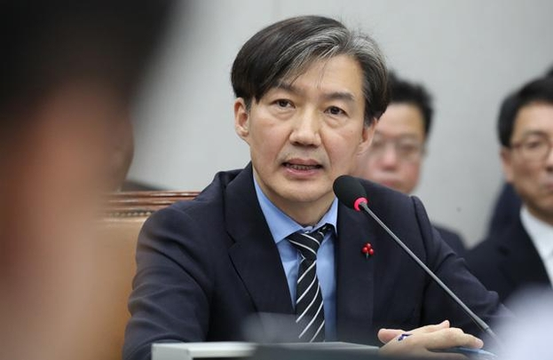

2019년 9월 9일, 문재인 정부의 첫 민정수석이자 두번째 법무부 장관으로 취임한후 논란이 붉어지기 시작하였다.
그중 크게 논란이 붉어지고 사퇴로 이어진 사건, 즉 조국사태들을 정리하여 보여주도록 하겠다.
첫째로, 조국의 부인 정경심이 상속받은 부동산 건물에서 받아 온 임대료 수익을 일반과세자(소득세 세율 10%)가 아닌
간이과세자(소득세 3%)로 등록하여 세금을 탈세하다가, 조국이 법무장관으로 지명받자 부랴부랴 가산세까지 물어가며 탈세를 인정하고
세금을 납부했다.
체납금액만 2500만 원에 가산세 20%까지 3천만 원으로 추정된다.

둘째로, 2019년 9월 6일, 동양대학교 표창장을 위조한 혐의로 검찰에 의해 기소됐다.
법무부에서는 6일째 정경심 교수의 공소장을 국회에 제출하는 것을 거부하고 있다고 한다.
검찰에서는 수차례 요청에도 불구하고, 정경심 교수가 원본을 검찰에 제출하지 않아
자체적으로 원본 없음으로 결론을 내린 것으로 보여진다
셋째로 검찰에서는 조민이 서울대 의전원과 부산대 의전원에 제출한 서류 중 동양대 봉사 프로그램 증명서가
위조된 것으로 보고 있고, 두 곳 모두 국립대인지라 국립대에 위조한 문서를 제출하여 입시 업무를 방해하였다면,
공무집행방해 혐의가 적용된다고 한다.
그 후 검찰 압수수색을 앞두고 자신의 연구실로 자산관리인을 데려와 학교 자산인 PC를 무단 반출하는 장면이 10일 확인됐다.
이 상황은 검찰이 동양대를 압수수색하기 이틀 전 벌어졌다. 이 PC에는 동양대가 발급한 적이 없는
'딸 조민씨 동양대 표창장' 이미지 파일이 보관돼 있었다.
또한 조국이 법무장관으로 지명되자 처음으로 터진 논란이다.
2017년 조국 후보자 부인과 아들, 딸이 10억여 원을 투자한 사모펀드인 코링크PE의 블루코어밸류업1호의
실체가 매우 모호하며 문제의 소지가 여럿 있다. 8월 23일 신원 미상의 나머지 투자자 3명의 신원이 조국 후보자의
처남 정 모씨와 두 아들인 것으로 밝혀졌다.
2019년 10월 8일 금융감독원 국정감사에서 윤석헌 금융감독원장은 조국 사모펀드에 대해 "아직까지 법률 위반사항은 없다.", "펀드 규제완화라는 틀 안에서 이루어지고 있다."라고 말하여 현재까진 밝혀진 위법성이 없다고 밝혔다.
다만 도덕성 문제에 대해서는 판단할 처지가 아니라고 말을 아꼈다.
2019년 9월 2일 조국 후보자는 국회에서 기자간담회를 열어 본 의혹에 대해 "코링크라는 이름 자체를 이번에 알게 됐고, 사모펀드가 뭔지도 몰랐다"며 사모펀드 투자 사실을 제대로 몰랐다고 해명했다.
하지만 사모펀드가 뭔지도 몰랐다는 조 후보자의 해명은 미국계 사모펀드인 론스타로 인해 발생한 론스타
게이트 시국에서 "론스타 문제를 잘 알고 있다"며 발언한 내용과는 모순된다. 또한 '범죄자 론스타의 먹튀 저지와
금융공공성 회복을 위한 지식인·법조인 선언'에 조 후보자도 동참했음이 밝혀졌다.
그러면서 의혹의 핵심인물인 5촌 조카 조씨에 대해서 "조카가 사모펀드 운용 과정에서 어떤 역할을 했는지
알지 못한다"며 "해외에 나가 있다니 하루빨리 귀국해 수사에 협조해주길 바라고 있다"고 밝혔고, 그 외 자세한 내용에 대해서는
검찰수사를 이유로 말을 아꼈다.
이후 10월 14일 조국이 법무부를 퇴사하였다.